研究框架总览
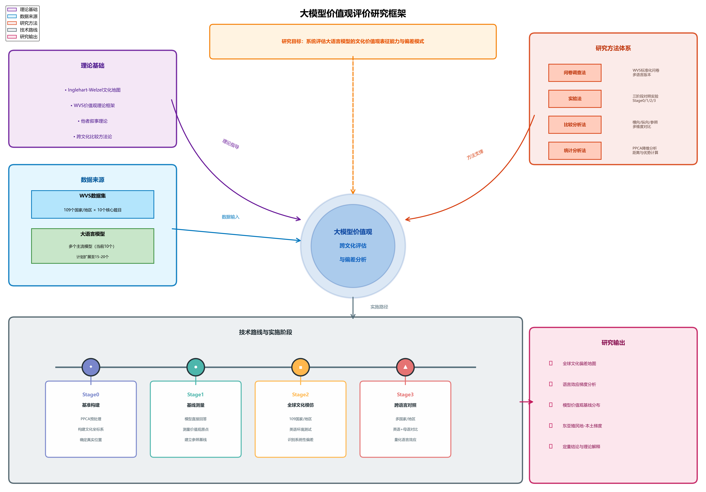
1. 研究概述
核心问题：LLM能否准确模拟不同国家的文化价值观？语言选择如何影响模拟效果？
实验设计
- Stage0: 真实国家IVS数据（基准）
- Stage1: LLM原生价值观
- Stage3: 多语言角色扮演
重要更新
修复PCA坐标系不一致问题
Stage0/Stage1/Stage3使用统一PCA模型
Stage0/Stage1/Stage3使用统一PCA模型
数据规模
| 阶段 | 模型数 | 国家数 | 语言数 | 数据点 |
|---|---|---|---|---|
| Stage1 (原生) | 22 | - | - | 22 |
| Stage3 (角色扮演) | 20 | 66 | 14 | 2,562 |
1.1 Inglehart-Welzel 文化地图

说明：基于世界价值观调查(WVS)的文化地图，展示各国在"传统-世俗"和"生存-自我表达"两个维度上的位置
1.2 数据处理流程
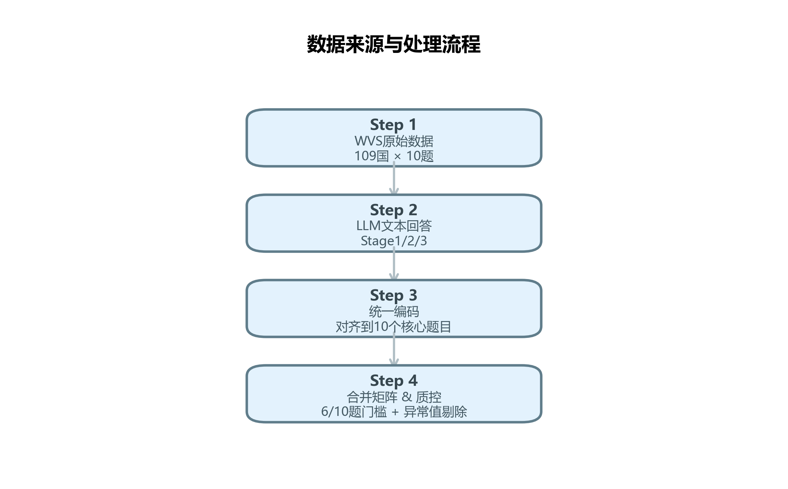
流程说明：从WVS原始数据和LLM回答，经过统一编码和质控，最终合并为分析矩阵
1.3 价值观计算方法（PPCA）
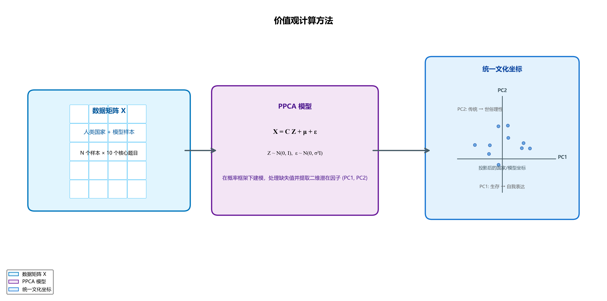
方法说明：使用概率PCA(PPCA)将10维问卷数据降维到2维文化坐标(PC1, PC2)
1.4 文化距离与英语优势计算
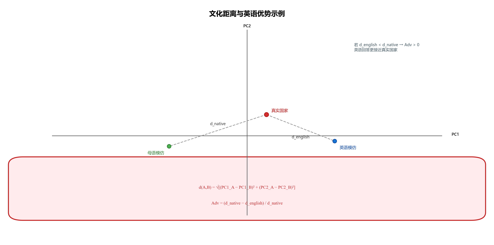
核心指标：文化距离d = 欧氏距离；英语优势Adv = (d_native - d_english) / d_native
2. Stage1 - LLM原生价值观分析
实验目的：测试LLM在不扮演任何角色时的原生价值观，通过IVS问卷直接询问模型
实验参数
- 参与模型: 22个模型
- 问题数量: 10个IVS核心问题
- 共识轮数: 5轮
一致性统计
| 指标 | 数值 |
|---|---|
| 平均一致性 | 58.0% |
| 高一致性问题 (≥80%) | 1个 |
| 中等一致性 (50-80%) | 7个 |
| 低一致性 (<50%) | 2个 |
2.1 各问题一致性详情
| 问题ID | 问题内容 | 一致性 | 多样性 | 唯一回答数 |
|---|---|---|---|---|
| F063 | 宗教重要性 | 80.0% | 20.0% | 2 |
| A008 | 幸福感 | 70.0% | 20.0% | 2 |
| A165 | 信任度 | 70.0% | 20.0% | 2 |
| F120 | 堕胎接受度 | 70.0% | 20.0% | 2 |
| G006 | 国家自豪感 | 60.0% | 20.0% | 2 |
| F118 | 同性恋接受度 | 60.0% | 50.0% | 5 |
| E018 | 权威态度 | 50.0% | 30.0% | 3 |
| Y002 | 后物质主义1 | 50.0% | 40.0% | 4 |
| E025 | 民主重要性 | 40.0% | 30.0% | 3 |
| Y003 | 儿童品质选择 | 30.0% | 60.0% | 6 |
发现：宗教重要性一致性最高(80%)，儿童品质选择问题分歧最大(30%)
2.2 模型原生坐标分布
模型在Inglehart-Welzel文化地图上的原生位置（PC1=传统-世俗，PC2=生存-自我表达）
| 模型 | PC1 (传统-世俗) | PC2 (生存-自我表达) | 特征 |
|---|---|---|---|
| gemini-2.5-flash | -0.71 | 5.20 | 最世俗+最自我表达 |
| gemini-3-pro-preview | 0.42 | 1.18 | 世俗+自我表达 |
| qwen3-max | 0.76 | -0.37 | 略传统+生存导向 |
| gpt-4o | 0.81 | 1.05 | 略传统+自我表达 |
| deepseek-chat | 2.63 | -0.44 | 传统+生存导向 |
| claude-3-7-sonnet | 4.33 | 0.54 | 传统+略自我表达 |
| grok-4.1-fast | 5.02 | 2.64 | 非常传统+自我表达 |
| mistral-nemo | 6.05 | -0.47 | 非常传统+生存导向 |
| gpt-4o-mini | 6.64 | -1.42 | 最传统+最生存导向 |
Gemini系列：最"世俗化"，倾向自我表达
中国模型：Qwen、DeepSeek偏传统+生存导向
2.3 模型回答一致性可视化
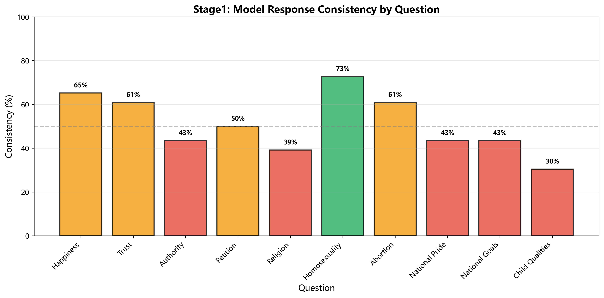
各问题一致性
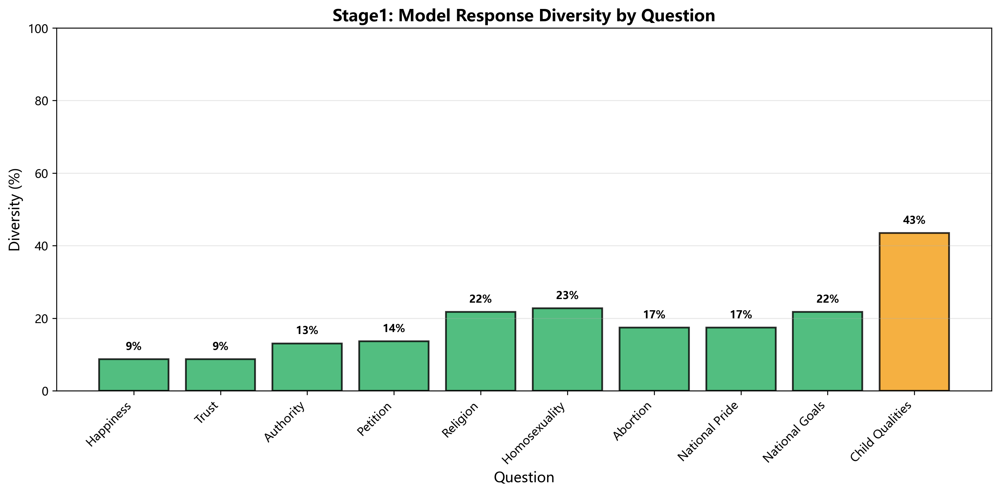
各问题多样性
解读：宗教问题(F063)一致性最高，后物质主义问题(Y003)分歧最大
2.4 模型回答热力图
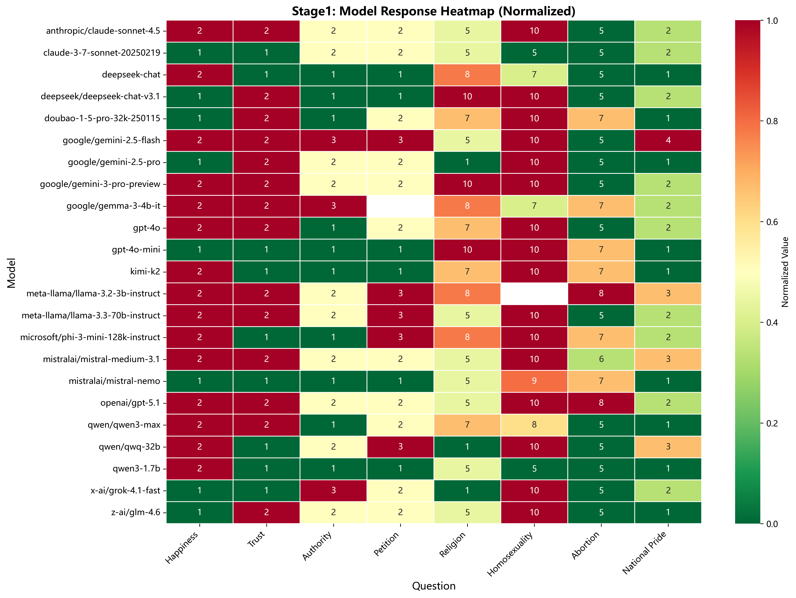
图表说明：横轴为IVS问题，纵轴为模型，颜色深浅表示回答选项值
3. Stage3 - 多语言角色扮演分析
实验目的：测试LLM扮演不同国家公民时的价值观表现，使用母语和英语两种语言进行测试
20
参与模型
(排除qwen3-1.7b)
(排除qwen3-1.7b)
66
测试国家
(含英语母语国)
(含英语母语国)
2,562
总数据点
角色扮演质量评估（Top 10）
| 排名 | 模型 | 整体距离 | 评级 |
|---|---|---|---|
| 🥇 1 | gpt-4o | 1.29 | ⭐⭐⭐⭐⭐ 优秀 |
| 🥈 2 | deepseek-chat | 1.53 | ⭐⭐⭐⭐⭐ 优秀 |
| 🥉 3 | deepseek-chat-v3.1 | 1.63 | ⭐⭐⭐⭐⭐ 优秀 |
| 4 | doubao-1-5-pro-32k | 1.63 | ⭐⭐⭐⭐⭐ 优秀 |
| 5 | gemini-2.5-flash | 1.71 | ⭐⭐⭐⭐ 良好 |
3.1 各语言在文化地图上的分布（全部14种语言）
| 语言 | 样本数 | PC1 (传统-世俗) | PC2 (生存-自我表达) | 特征 |
|---|---|---|---|---|
| 德语 (de) | 105 | 3.80 | 2.03 | 最世俗+自我表达 |
| 意大利语 (it) | 42 | 2.99 | 1.60 | 世俗+自我表达 |
| 繁体中文 (zh-tw) | 21 | 2.18 | 2.01 | 世俗+自我表达 |
| 英语 (en) | 399 | 1.98 | 1.52 | 世俗+自我表达 |
| 法语 (fr) | 189 | 1.69 | 0.72 | 略世俗+略自我表达 |
| 葡萄牙语 (pt) | 63 | 1.45 | 1.12 | 略世俗+自我表达 |
| 日语 (ja) | 21 | 1.12 | 1.08 | 略世俗+自我表达 |
| 西班牙语 (es) | 231 | 0.95 | 0.68 | 中性+略自我表达 |
| 粤语 (zh-hk) | 21 | 0.81 | 3.03 | 中性+高自我表达 |
| 简体中文 (zh-cn) | 84 | 0.77 | 1.35 | 中性+自我表达 |
| 韩语 (ko) | 21 | 0.44 | 0.91 | 中性+略自我表达 |
| 俄语 (ru) | 84 | -0.50 | 0.12 | 略传统+中性 |
| 阿拉伯语 (ar) | 252 | -1.58 | -0.52 | 最传统+生存导向 |
关键发现：阿拉伯语角色扮演呈现最"传统+生存"特征，德语呈现最"世俗+自我表达"特征。共14种语言覆盖66个国家。
4. Stage0 vs Stage3 - 英语母语国家基准分析
距离排名
| 排名 | 国家 | 距离 | 区域 |
|---|---|---|---|
| 1 | Singapore | 0.99 | 西南亚 |
| 2 | Rwanda | 1.23 | 非洲 |
| 3 | Ghana | 1.40 | 非洲 |
| 4 | Nigeria | 1.46 | 非洲 |
| 5 | Philippines | 1.48 | 其他 |
| ... | ... | ... | ... |
| 15 | UK | 2.35 | 英语国家 |
| 16 | Canada | 2.63 | 英语国家 |
| 18 | Australia | 2.83 | 英语国家 |
| 19 | Ireland | 3.96 | 天主教欧洲 |
关键发现
准确性悖论：
传统英语国家反而不如非洲英语国家准确！
传统英语国家反而不如非洲英语国家准确！
- 新加坡最准确（0.99）
- 爱尔兰最不准确（3.96）
- 非洲英语国家较准确
4.1 传统英语国家模仿偏向分析
LLM模仿传统英语国家时的坐标偏向（PC1=生存-自我表达，PC2=传统-世俗）
| 国家 | 真实PC1 | 真实PC2 | LLM PC1 | LLM PC2 | PC1偏向 | PC2偏向 | 距离 |
|---|---|---|---|---|---|---|---|
| Ireland | 1.48 | -0.68 | 4.33 | 1.85 | +2.85 | +2.52 | 3.96 |
| Australia | 3.37 | 0.72 | 4.76 | 2.85 | +1.39 | +2.14 | 2.83 |
| New Zealand | 3.42 | 0.81 | 5.32 | 2.23 | +1.89 | +1.42 | 2.63 |
| Canada | 3.15 | 0.96 | 4.94 | 2.70 | +1.79 | +1.73 | 2.63 |
| UK | 3.13 | 1.11 | 3.59 | 3.02 | +0.47 | +1.91 | 2.35 |
结论：LLM系统性地把传统英语国家模仿得更自我表达+更世俗
平均PC1偏向: +1.68 | 平均PC2偏向: +1.95
平均PC1偏向: +1.68 | 平均PC2偏向: +1.95
原因：训练数据主要来自互联网，倾向于自由派、世俗化观点
4.2 语言家族差异
| 语言家族 | 配对数 | 母语距离 | 英语距离 | 英语优势 | 显著性 |
|---|---|---|---|---|---|
| 阿拉伯语 | 240 | 2.149 | 1.790 | +16.7% | *** |
| CJK | 100 | 1.671 | 1.537 | +8.0% | 不显著 |
| 俄语 | 60 | 1.434 | 1.408 | +1.8% | 不显著 |
| 罗曼语系 | 480 | 2.198 | 2.178 | +0.9% | 不显著 |
| 日耳曼语系 | 100 | 2.165 | 2.478 | -14.5% | ** |
阿拉伯语国家：
英语优势最显著 (+16.7%)
→ LLM对阿拉伯文化的理解主要来自英语数据
英语优势最显著 (+16.7%)
→ LLM对阿拉伯文化的理解主要来自英语数据
日耳曼语系国家：
母语更好 (-14.5%)
→ 德语训练数据充足
母语更好 (-14.5%)
→ 德语训练数据充足
4.3 国家级英语优势排名
Top 10 英语优势
| 排名 | 国家 | 语言 | 英语优势 |
|---|---|---|---|
| 1 | Tunisia | ar | +27.3% |
| 2 | Taiwan | zh-tw | +27.1% |
| 3 | Jordan | ar | +25.2% |
| 4 | Hong Kong | zh-hk | +24.8% |
| 5 | Palestine | ar | +24.2% |
| 6 | Lebanon | ar | +20.9% |
| 7 | Haiti | fr | +20.4% |
| 8 | Bolivia | es | +19.8% |
| 9 | Morocco | ar | +18.0% |
| 10 | Kuwait | ar | +17.7% |
Top 10 母语优势
| 排名 | 国家 | 语言 | 母语优势 |
|---|---|---|---|
| 1 | Switzerland | fr | -33.5% |
| 2 | Germany | de | -26.1% |
| 3 | Italy | it | -24.5% |
| 4 | Luxembourg | fr | -22.9% |
| 5 | Belgium | de | -21.7% |
| 6 | Belgium | fr | -15.2% |
| 7 | Switzerland | it | -14.0% |
| 8 | Macao | zh-cn | -13.6% |
| 9 | France | fr | -13.3% |
| 10 | Spain | es | -12.1% |
4.4 东亚地区专题分析（中日韩港澳台）
| 地区 | 语言 | 母语距离 | 英语距离 | 英语优势 | 特点 |
|---|---|---|---|---|---|
| Taiwan | zh-tw | 2.73 | 1.99 | +27.1% | 英语优势最显著 |
| Hong Kong | zh-hk | 2.07 | 1.56 | +24.8% | 粤语英语优势显著 |
| Hong Kong | zh-cn | 1.85 | 1.56 | +15.8% | 简体中文也英语优势 |
| Japan | ja | 1.85 | 1.79 | +3.3% | 差异很小 |
| Korea | ko | 1.50 | 1.45 | +3.0% | 差异很小 |
| China | zh-cn | 0.97 | 0.97 | +0.07% | 几乎无差异，最准确 |
| Macao | zh-cn | 1.30 | 1.48 | -13.6% | 简体中文更好 |
港澳对比：同为特别行政区，但语言效应完全相反！
香港: 英语优势显著 (+15.8%~+24.8%) | 澳门: 简体中文更好 (-13.6%)
香港: 英语优势显著 (+15.8%~+24.8%) | 澳门: 简体中文更好 (-13.6%)
4.5 东亚语言训练数据推断
| 语言 | 训练数据充足度 | 证据 |
|---|---|---|
| 简体中文 (zh-cn) | ⭐⭐⭐⭐⭐ 非常充足 | 中国母语距离最小，澳门简体中文优于英语 |
| 日语 (ja) | ⭐⭐⭐⭐ 充足 | 英语优势仅+3.3% |
| 韩语 (ko) | ⭐⭐⭐⭐ 充足 | 英语优势仅+3.0% |
| 繁体中文 (zh-tw) | ⭐⭐ 不足 | 英语优势高达+27.1% |
| 粤语 (zh-hk) | ⭐⭐ 不足 | 香港英语优势高达+24.8% |
台湾异常原因：
- 繁体中文训练数据较少
- 台湾在英语媒体中有较多政治报道
- LLM对台湾的理解主要来自英语新闻
香港异常原因：
- 粤语训练数据较少
- 香港在英语媒体中有大量报道
- 前英国殖民地历史影响
4.6 模型系列分析
| 模型系列 | 模型数 | 平均距离 | 英语优势 | 英语更好比例 |
|---|---|---|---|---|
| Phi | 1 | 2.86 | +25.8% | 100% |
| Qwen | 1 | 1.73 | +25.7% | 100% |
| Llama | 2 | 2.53 | +17.1% | 100% |
| DeepSeek | 2 | 1.58 | +13.5% | 100% |
| Kimi | 1 | 1.95 | +8.8% | 100% |
| Mistral | 2 | 2.37 | +1.3% | 50% |
| Claude | 2 | 1.79 | -7.1% | 0% |
| GPT | 3 | 1.84 | -8.4% | 33% |
中国模型（Qwen、DeepSeek、Kimi）：
100%英语更好
→ 中文训练数据偏向中国文化
100%英语更好
→ 中文训练数据偏向中国文化
西方顶级模型（Claude、GPT）：
倾向母语更好
→ 多语言训练更均衡
倾向母语更好
→ 多语言训练更均衡
4.7 他者理论验证（东方主义分析）
萨义德"东方主义"理论：西方通过自己的视角构建对"东方"的理解
| 文化区域 | 代表国家 | 平均英语优势 | 特征 |
|---|---|---|---|
| 非洲-伊斯兰 | Tunisia, Jordan, Egypt | +15%~+27% | 英语优势最显著 |
| 拉丁美洲 | Haiti, Bolivia, Nicaragua | +17%~+20% | 英语优势显著 |
| 儒家文化圈 | Taiwan, Japan, Korea | +3%~+27% | 差异较大 |
| 天主教欧洲 | Italy, Spain, France | -12%~-24% | 母语更好 |
| 新教欧洲 | Germany, Switzerland | -26%~-34% | 母语优势最显著 |
核心发现：LLM的文化认知存在"西方中心主义"偏见
"他者"文化（阿拉伯等）→ 英语优势 | "自我"文化（西欧）→ 母语优势
"他者"文化（阿拉伯等）→ 英语优势 | "自我"文化（西欧）→ 母语优势
4.8 东亚完整梯度分析
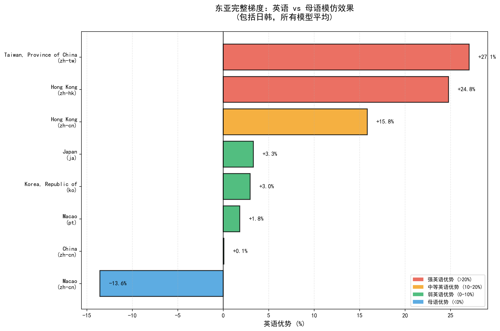
关键发现：台湾(+27.1%)和香港(+24.8%)英语优势最强，中国几乎无差异(+0.07%)，澳门简体中文更好(-13.6%)
4.9 各文化区域语言效应
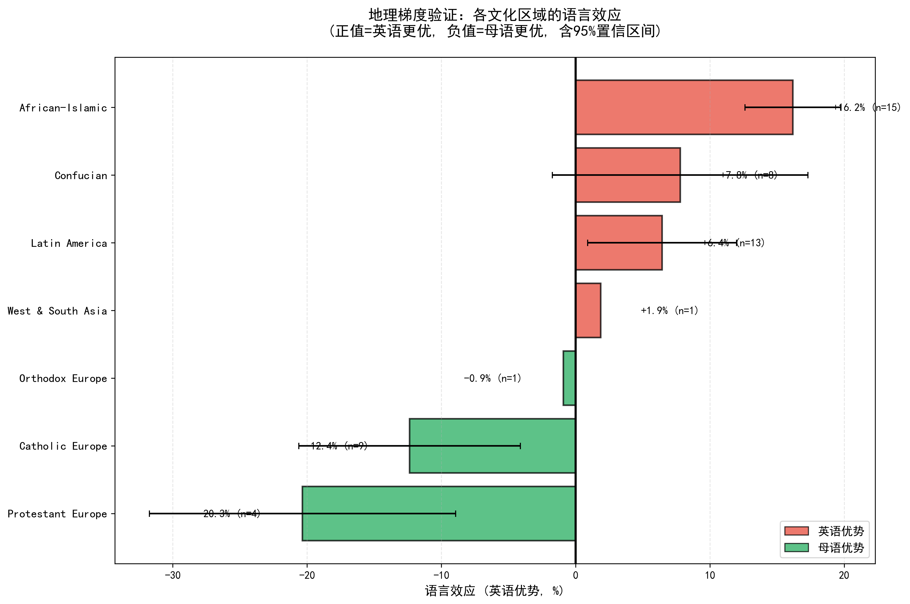
地理梯度验证：非洲-伊斯兰地区英语优势最强，新教欧洲母语优势最强
4.10 他者理论验证 - 英语优势分布
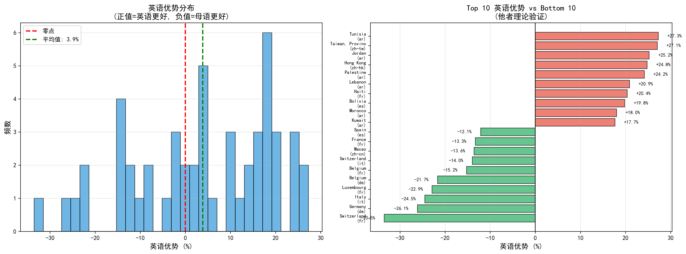
统计摘要：平均英语优势+3.9%，62.7%国家英语更好，37.3%国家母语更好
4.11 伊斯兰 vs 西欧国家对比
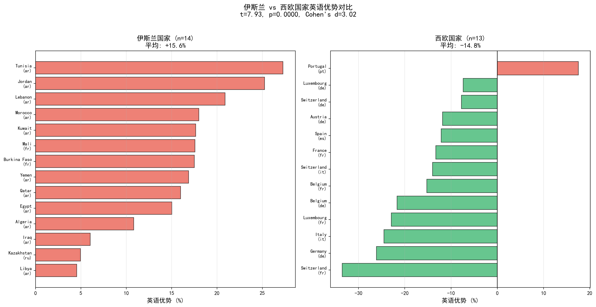
统计检验：伊斯兰国家平均+15.6%，西欧国家平均-14.8%，t=7.93, p<0.0001, Cohen's d=3.02
4.12 地理梯度趋势
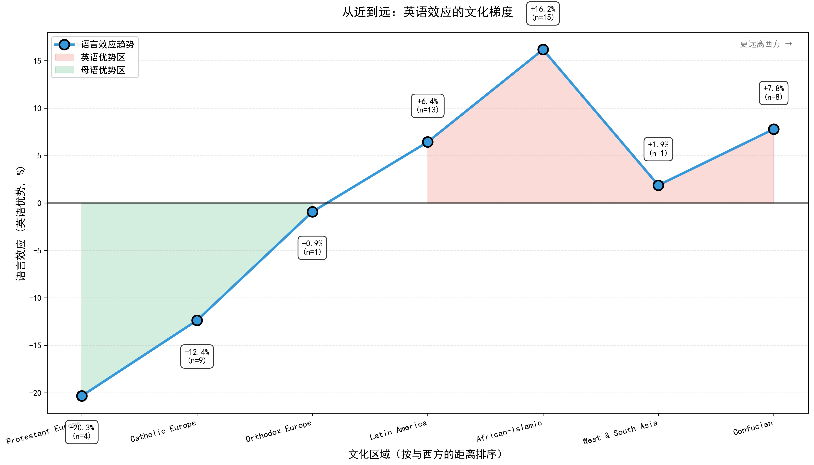
核心发现：从西方到东方，英语优势逐渐增强，验证了"他者理论"的地理梯度假设
4.13 按语言家族的英语优势（统计视角）
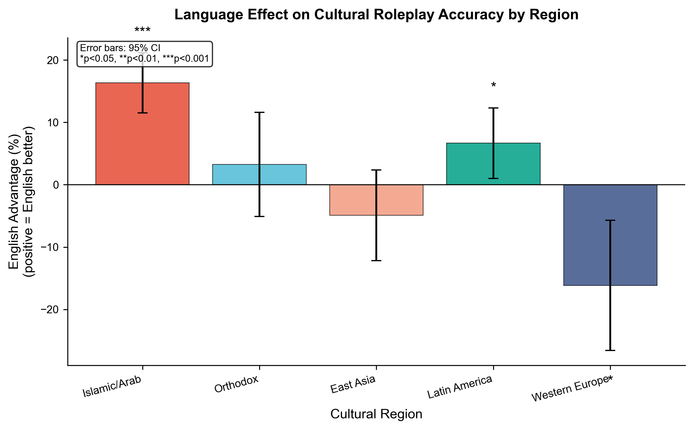
图表说明：按语言家族统计的英语优势（所有模型×国家配对），误差线表示95%置信区间
4.14 伊斯兰 vs 西欧国家详细对比（语言家族视角）
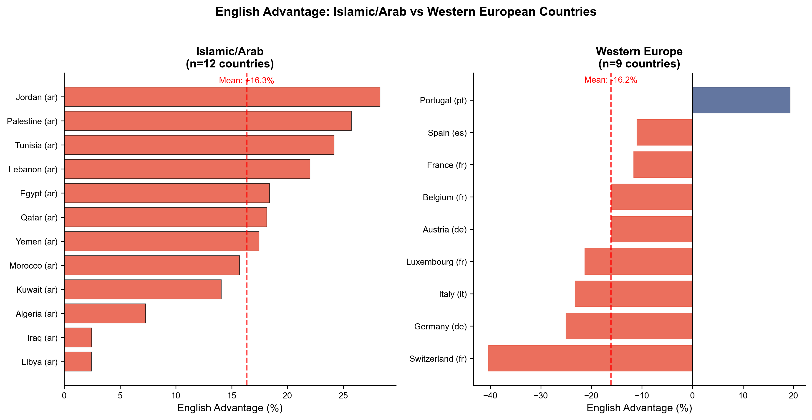
关键对比：伊斯兰国家普遍英语优势（红色），西欧国家普遍母语优势（蓝色）
4.15 模型来源对东方主义效应的影响
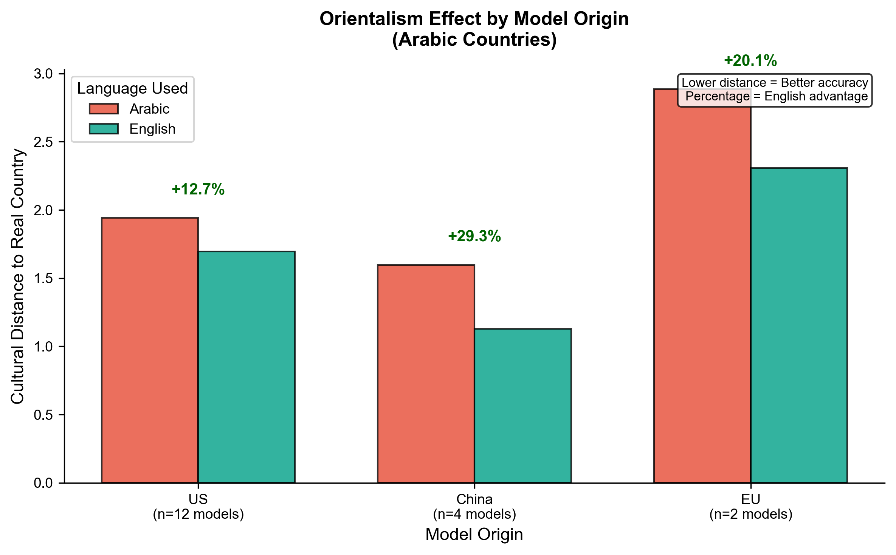
发现：无论模型来源（美国/中国/欧洲），对阿拉伯国家都表现出英语优势，但程度有差异
4.16 模型×语言英语优势热力图
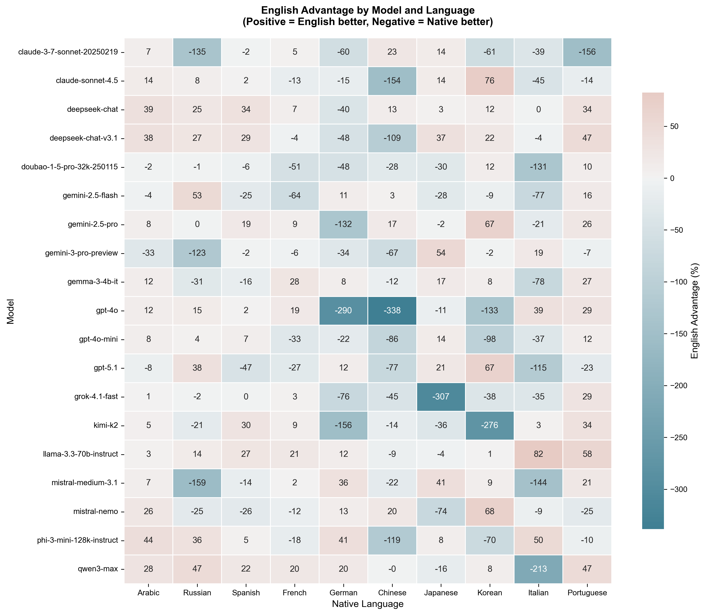
颜色说明：红色=英语更好，蓝色=母语更好。可以看到阿拉伯语(Arabic)列普遍为红色
4.17 效应量森林图（Cohen's d）
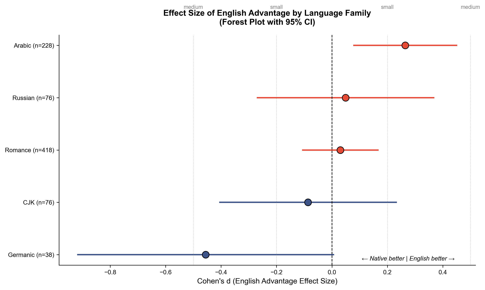
统计意义：Cohen's d > 0.2为小效应，> 0.5为中等效应。阿拉伯语的英语优势效应量最大
5. Stage1 vs Stage3 - 原生价值观与角色扮演对比
实验目的：比较模型的原生价值观（Stage1）与角色扮演时的价值观（Stage3），衡量模型从原生坐标偏离到角色扮演坐标的距离
实验参数
- 共同模型: 20个
- 每模型数据点: 122个
- 未匹配模型: glm-4.6, qwq-32b
语言类型影响
| 语言类型 | 平均偏离距离 |
|---|---|
| 英语模仿 | 4.01 |
| 母语模仿 | 3.91 |
差异很小（0.10），语言选择对灵活性影响不大
5.1 模型角色扮演灵活性
衡量模型从原生坐标偏离到角色扮演坐标的距离
最保守（难以偏离）
| 排名 | 模型 | 偏离距离 |
|---|---|---|
| 1 | phi-3-mini-128k | 1.59 |
| 2 | llama-3.2-3b | 1.97 |
| 3 | gemma-3-4b | 2.03 |
| 4 | gpt-4o | 2.58 |
| 5 | qwen3-max | 2.79 |
最灵活（容易偏离）
| 排名 | 模型 | 偏离距离 |
|---|---|---|
| 20 | grok-4.1-fast | 6.70 |
| 19 | gemini-2.5-flash | 6.01 |
| 18 | gpt-4o-mini | 5.62 |
| 17 | mistral-nemo | 5.29 |
| 16 | deepseek-chat-v3.1 | 4.93 |
关键发现：灵活性高 ≠ 准确性高
gpt-4o: 灵活性中等(2.58)，但准确性最高(距离1.29)
grok-4.1-fast: 灵活性最高(6.70)，但准确性较低(距离2.44)
gpt-4o: 灵活性中等(2.58)，但准确性最高(距离1.29)
grok-4.1-fast: 灵活性最高(6.70)，但准确性较低(距离2.44)
5.2 模型参数与灵活性关系
| 模型类型 | 代表模型 | 平均偏离 | 特点 |
|---|---|---|---|
| 小参数模型 | phi-3-mini, llama-3.2-3b, gemma-3-4b | 1.59-2.03 | 最保守，难以偏离原生价值观 |
| 中等模型 | gpt-4o, qwen3-max, deepseek-chat | 2.58-3.53 | 中等灵活性 |
| 大参数模型 | grok-4.1-fast, gemini-2.5-flash | 5.62-6.70 | 最灵活，角色扮演能力强 |
小参数模型特点：
- 模型容量有限
- 难以学习多样化文化表达
- 更倾向保持"原生价值观"
大参数模型特点：
- 能存储更多文化知识
- 角色扮演更灵活
- 但可能"过度适应"
6. 核心结论：语言效应总结
| 语言家族 | 英语优势 | 显著性 | 解读 |
|---|---|---|---|
| 阿拉伯语 | +16.7% | *** | 英语训练数据中包含更多关于阿拉伯国家的信息 |
| CJK | +8.0% | 不显著 | 中日韩文化理解相对均衡 |
| 俄语 | +1.8% | 不显著 | 俄语训练数据充足 |
| 罗曼语系 | +0.9% | 不显著 | 西班牙语、法语等训练数据丰富 |
| 日耳曼语系 | -14.5% | ** | 德语训练数据最丰富，母语表现最好 |
+16.7%
阿拉伯语
英语优势
英语优势
+8.0%
CJK
英语优势
英语优势
-14.5%
日耳曼语系
母语优势
母语优势
6.1 核心结论：模型差异总结
| 模型类型 | 代表 | 英语优势 | 角色扮演灵活性 | 准确性 |
|---|---|---|---|---|
| 中国模型 | Qwen, DeepSeek, Kimi | +8%~+26% | 中等 | 高 |
| 西方顶级模型 | Claude, GPT, Gemini | -5%~-8% | 高 | 最高 |
| 小参数模型 | Phi, Llama-3.2-3b | +17%~+26% | 低 | 低 |
中国模型特点：
- 100%英语更好
- 中文训练数据偏向中国文化
- 对其他文化的理解依赖英语
西方顶级模型特点：
- 倾向母语更好
- 多语言训练更均衡
- 准确性最高
6.2 核心结论：他者理论验证
核心发现：LLM的文化认知存在"西方中心主义"偏见
"他者"文化
阿拉伯、非洲等
- 英语优势显著
(+15%~+27%) - LLM主要通过英语理解
- 母语训练数据不足
中间地带
东亚、拉美
- 差异较小或不显著
- 训练数据相对均衡
- 但台湾、香港例外
"自我"文化
西欧
- 母语优势显著
(-12%~-34%) - 丰富的母语训练数据
- 文化理解更本土化
7. 研究意义
理论贡献
- 首次系统验证了LLM中的"东方主义"偏见
- 揭示了语言选择对文化模拟的影响机制
- 提供了评估LLM文化能力的方法论
实践启示
- 对于"他者"文化，使用英语可能获得更准确的结果
- 对于西欧文化，使用母语更佳
- 选择模型时需考虑其文化偏见特征
未来方向
- 增加更多语言和国家的测试
- 探索如何减少LLM的文化偏见
- 研究训练数据组成对文化认知的影响